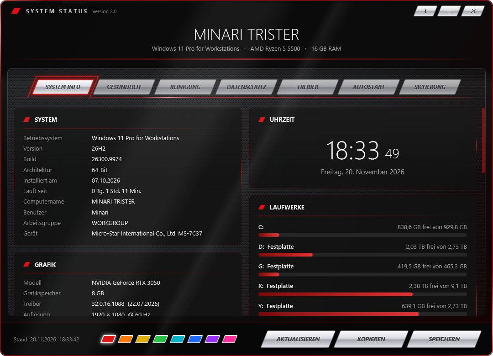
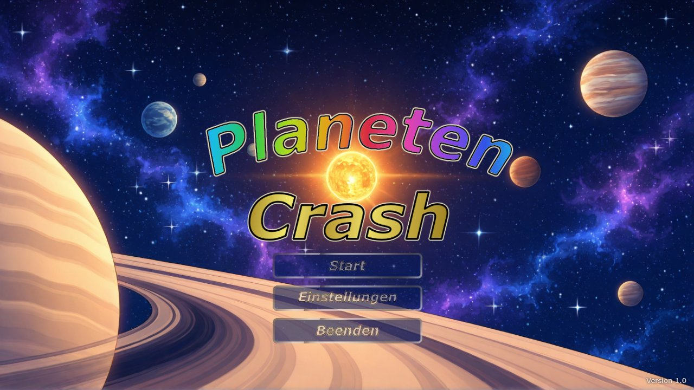

Programme · Spiele · Videos · Grafiken
Hallo und willkommen in meiner Werkstatt! Ich bin Minari Trister.
In meiner Freizeit baue ich kleine Windows-Programme, arbeite an meinem eigenen Rollenspiel mit dem RPG Maker, schneide Anime-Musik-Videos und gestalte Grafiken mit Photoshop.
Hier zeige ich, woran ich gerade arbeite – fertige Programme gibt es zum Herunterladen, bei allem anderen kannst du zusehen, wie es wächst.

Zeigt, was im PC steckt und wie es ihm geht – und hilft beim Pflegen.
Zeigt auf einen Blick, was im PC steckt und wie es ihm geht – und hilft beim Pflegen: Gesundheit der Festplatten, Reinigung, Datenschutz, Treiber, Autostart und Sicherung von Lesezeichen & Co.
Reinigung und Sicherung erkennen jetzt auch weniger bekannte Browser (z. B. Opera, Waterfox, LibreWolf, Thorium). Außerdem startet das Programm schneller: Das Fenster bleibt beim Laden bedienbar, und ein Ladekreis zeigt, dass gearbeitet wird.
Beim ersten Start meldet Windows evtl. „Der Computer wurde durch Windows geschützt“ – dann auf „Weitere Informationen“ und „Trotzdem ausführen“. Benutzung auf eigene Verantwortung.

Drei gewinnt mit Planeten – mit Sondersteinen, Ketten und einem Schwarzen Loch.
Mein eigenes Rollenspiel, gebaut mit dem RPG Maker – noch in Arbeit.
Ein Drei-gewinnt-Spiel mit Planeten: Tausche zwei Steine, damit drei oder mehr gleiche in einer Reihe stehen. Aus vier, fünf oder sechs gleichen entstehen Sondersteine – Sterne, Sonnen, Blitze und sogar ein Schwarzes Loch.
Drei gewinnt
Nur mit der Maus: Stein auf den Nachbarn ziehen – oder erst den einen, dann den anderen Stein anklicken. Der Spielstand wird automatisch gespeichert.
Zip entpacken und „Planeten Crash.exe“ starten – der Ordner „Daten“ muss daneben liegen bleiben. Beim ersten Start meldet Windows evtl. „Der Computer wurde durch Windows geschützt“ – dann auf „Weitere Informationen“ und „Trotzdem ausführen“.
Mein eigenes Rollenspiel, gebaut mit dem RPG Maker. Es geht langsam voran – hier halte ich jeden Fortschritt fest.
Der erste Eintrag folgt bald.
Anime-Musik-Videos
Spiele, gespielt und kommentiert
Bilder und Grafiken, die ich mit Photoshop gestaltet habe.